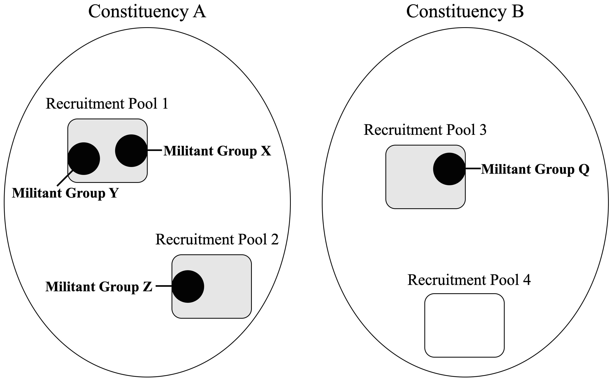
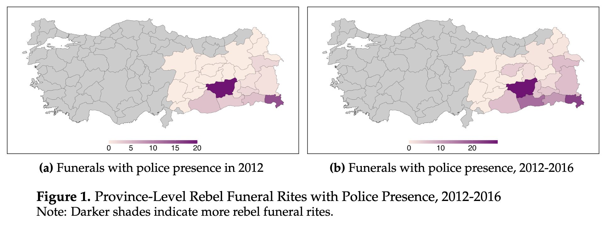
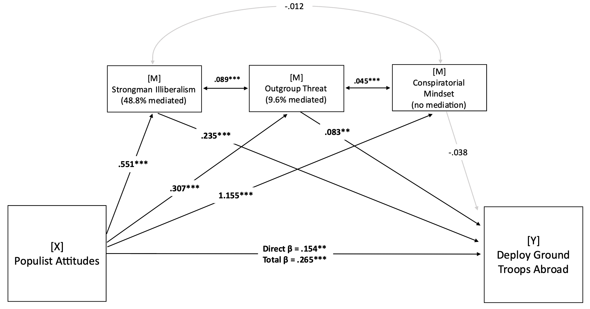
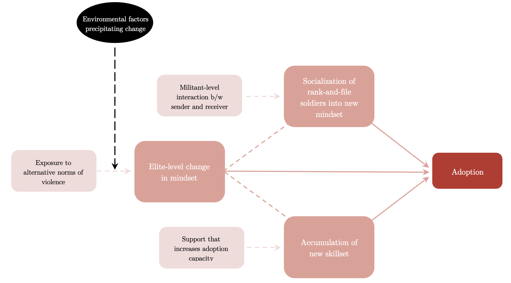
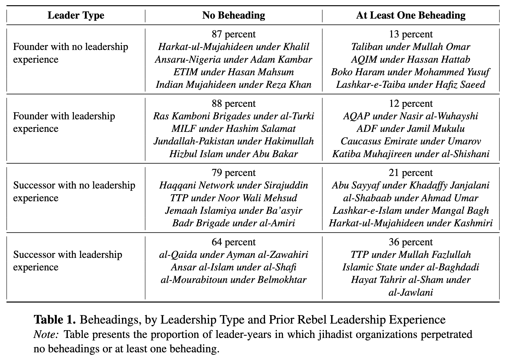
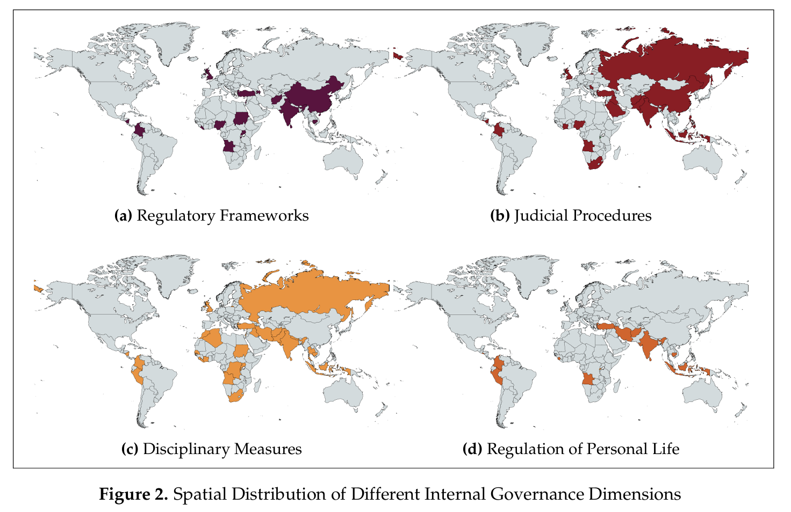
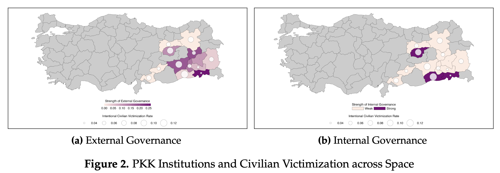

Ongoing Projects
Why do some militant groups that appeal to the same constituency cooperate, while others descend into violent rivalry? I develop a theoretical framework that distinguishes between shared constituencies-the broader social groups on whose behalf militants claim to fight and shared recruitment pools-the specific social networks from which they draw members. I argue that shared constituencies facilitate cooperation only when groups recruit from distinct social bases, whereas overlapping recruitment pools pose existential threats, fueling infighting. I test these expectations using Temporal Exponential Random Graph Models (TERGMs) on an original temporal network dataset of 53 militant organizations active in India between 1981-2021. To operationalize recruitment pool overlap, I introduce a novel behavioral proxy based on documented cases of rank-and-file defections across groups. The results are consistent with the proposed theory. These findings advance our understanding of militant behavior and speak to broader debates on representation and competition in contentious politics.

Rebel groups engage in performative governance acts that mimic the symbolic repertoires of sovereign states, such as martyr funerals or mass demonstrations. How do these acts shape civilian participation in rebellion? I conceptualize performative rebel governance as a legibility-oriented strategy through which rebels map civilian loyalties beyond their immediate networks. Voluntary participation in public acts allows rebels to identify potential supporters who might otherwise remain outside the movement, including women and politically inactive individuals. At the same time, these acts increase the visibility of rebellion to the state, exposing participants to surveillance and raising the costs of mobilization. Using a difference-in-differences design that combines original data on PKK fighter funerals in Southeast Turkey with individual-level recruitment data, I show that rebel funerals expand recruitment among harder-to-reach groups while reducing overall mobilization. Rebel governance in contested spaces thus entails a dilemma: efforts to increase legibility also increase legibility to the state.

What kinds of counterterrorism policies do populist individuals in the United States prefer in the aftermath of terrorist attacks? We theorize that these preferences are shaped by attitudes toward liberal institutions, social outgroups, and conspiratorial beliefs. To test this, we conducted an original survey of 1,940 subjects living in the United States. We found that subjects exhibiting populist attitudes were more likely to support unilateral, militarized counterterrorism policies in response to terrorist attacks but were less supportive of cooperative, or multilateral counterterrorism policies. We also found greater support among these individuals for restrictive domestic security measures, including immigration and border controls, and expanded government authority related to surveillance, detention, and arrest. To understand more about these patterns, we also conducted mediation tests and found that support for strongman rule, perceived threats from outgroups, and conspiratorial thinking patterns are strong and substantive mediators for the relationship between populism and counterterrorism preferences.

This study examines how the nature of alliances shapes militant groups’ capacity to adopt tactics that demand organizational change. Challenging the view that tactical diffusion is an automatic byproduct of alliances, I argue that only alliances involving joint training, rather than those limited to arms, funds, or rhetorical support, facilitate the mindset shifts, socialization processes, and skill acquisition needed for adopting new tactics from allies. Joint training fosters not only elite-level exchanges but also fighter-level interactions that build shared norms, understandings, and practices. I test this argument with an original cross-sectional time-series dataset on 53 militant groups in Northeast India (1980–2021), focusing on the diffusion of kidnapping-a tactic that requires normative reorientation toward restraint and non-combat skills. Evidence from split-halves tests, staggered difference-in-differences analyses, panel vector autoregression models, and additional analyses leveraging placebo tests and exogenous shocks shows that alliances involving joint training with kidnapping-proficient allies significantly increase adoption, whereas other alliance forms do not. Once adopted, kidnapping persists, consistent with a complex contagion process in which norms and practices are reinforced within a community of interacting groups. By linking tactical diffusion to organizational learning, the findings show how specific inter-militant interactions can drive organizational change, opening avenues for research on whether similar mechanisms transmit norms and practices beyond violence, including governance, diplomacy, and transnational campaigning.

Why do armed groups use extreme forms of violence such as beheadings, despite their significant costs? This study argues that leadership transitions create authority crises that incentivize successors to adopt extra-lethal violence as a tool of internal consolidation and external signaling. These pressures are particularly acute for successors with prior leadership experience in other armed groups: having previously lost power, these leaders face additional reputational deficits and are especially likely to view extra-lethal violence as a useful instrument of authority consolidation. Drawing on an original dataset of 206 leaders from 108 jihadist groups active between 1976 and 2023, we find that organizations are significantly more likely to use beheadings under successor leaders than under founders. This effect is most pronounced among those with prior rebel leadership experience. We also find that these patterns are more consistent with successors’ strategic use of beheadings to address short-term authority deficits than with alternative explanations such as ideological extremism, technical skill, transnational network ties, or unsanctioned violence by subordinates. By shifting attention from organizational incentives to leader-level dynamics, this study contributes to research on militant leadership, succession in armed groups, and the strategic logic of extra-lethal violence.

Existing research shows that rebel groups develop strategies to mitigate principal-agent problems and align the preferences of rank-and-file fighters with those of leaders, and that these strategies influence conflict processes. Yet, systematic cross-national data on how groups regulate fighters, foster cohesion, and punish disobedience remain absent. To address this gap, we introduce the Rebel Internal Governance (RIG) Dataset, which codes original, time-variant information on 14 internal institutions and practices of 166 rebel groups across 57 countries between 1990 and 2012. By capturing both written and de facto regulatory frameworks, judicial procedures, and disciplinary practices used to regulate fighter behavior, the dataset provides new leverage to examine how internal governance (or its absence) shapes rebels' violent behavior and relations with civilian populations. We demonstrate the utility of the dataset through an empirical application to wartime rape, reassessing the argument that weak discipline or efforts to foster cohesion precipitate rebel-perpetrated sexual violence. By leveraging groups' internal governance practices as a more direct proxy of cohesion and discipline, we bring new evidence to this debate. The RIG advances research on rebel governance by adding a new dimension: how groups govern their own members, alongside how they govern civilians.

Why do governance-oriented rebel groups victimize civilians while building state-like institutions? Existing theories treat governance and violence as substitutes for securing civilian compliance, yet many rebels pursue both simultaneously. To address this puzzle, we advance a theory that disaggregates rebel institutions by purpose and target, distinguishing between internal institutions that regulate fighters and external institutions that regulate civilians. Drawing on insights from the literatures on civil war and authoritarian politics, we theorize how different combinations of internal and external governance shape civilian victimization by constraining, or failing to constrain, two pathways to harm: leader-authorized strategic violence and leader-disavowed opportunistic violence by rank-and-file combatants. To test the observable implications of this theory, we introduce a novel dataset on rebel internal governance and pair it with existing data on civilian-facing governance institutions and civilian victimization. Using a research design that exploits the unexpected death of rebel leaders to address endogeneity concerns, we analyze 166 rebel organizations operating in 57 countries between 1990 and 2012. We corroborate these findings with subnational evidence from the PKK insurgency in Turkey and illustrative case evidence from Al-Qaeda in the Islamic Maghreb and the Indigenous People of Biafra. Across levels of analysis, we find that governance institutions reduce civilian victimization only when they jointly regulate both fighters and civilians. Internal or external institutions alone fail to produce systematic reductions in civilian harm. These findings show that rebel governance can coexist with, enable, or constrain violence depending on whom institutions are designed to control, refining theories of rebel governance and offering a more nuanced account of civilian life under armed group rule.
